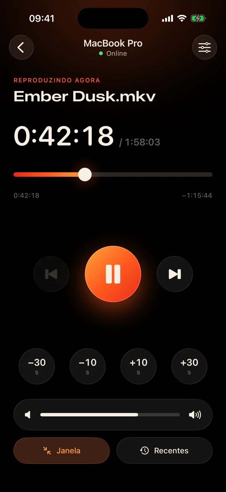
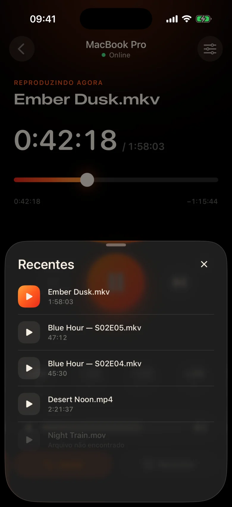
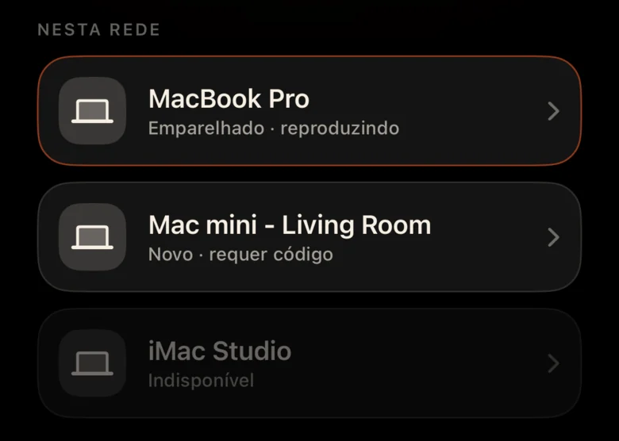
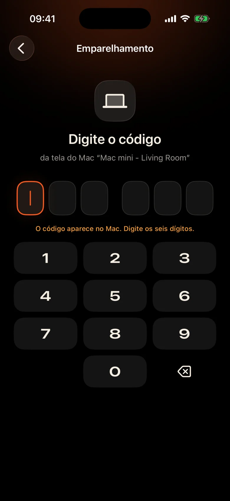

O Mac está do outro lado da sala
Está conectado ao projetor perto da parede. Cada pausa significa levantar-se, encontrar o trackpad no escuro e apertar os olhos para uma pequena barra de controle.
Kinrox: toque em pausa no telefone em sua mão.
Kinrox reproduz qualquer vídeo em seu Mac - e transforma seu iPhone em seu controle remoto. MacBook no projetor, você no sofá: pause, volte 10 segundos, diminua o volume ou comece o próximo episódio sem sair do cobertor.


Está conectado ao projetor perto da parede. Cada pausa significa levantar-se, encontrar o trackpad no escuro e apertar os olhos para uma pequena barra de controle.
Kinrox: toque em pausa no telefone em sua mão.
Sussurros em uma cena, explosões na próxima – e alguém já está dormindo no quarto ao lado.
Kinrox: um controle deslizante de volume logo abaixo do polegar.
Painéis da web com endereços IP e senhas, uma aba do navegador que adormece, botões feitos para uma mesa – não para um sofá.
Kinrox: encontra seu Mac sozinho, emparelha com um código.

Grandes alvos, um tema escuro e quente e um leve toque de sensação ao toque a cada toque. Você pode usá-lo sem desviar o olhar do filme.
Todos os controles são grandes o bastante para usar mesmo com sono.
Perdeu uma linha? Um toque para trás. Pule a introdução com dois.
Volume próprio do Kinrox, de 0 a 100. O volume do sistema do Mac permanece intacto.
Arquivo anterior e seguinte da mesma pasta, na ordem Finder.
Escolha algo que você assistiu antes – ele abre no Mac.
Arraste a linha do tempo para qualquer momento, mude para tela cheia do sofá.
Sem endereços IP, sem senhas, sem conta. Após o primeiro código, seu iPhone se reconecta sozinho.
Arraste um arquivo para Kinrox ou pressione ⌘ O. O servidor remoto está ativado por padrão.
Kinrox aparece sozinho quando ambos os dispositivos estão no mesmo Wi-Fi.

O Mac mostra um código que dura dois minutos. Três tentativas erradas e acabou.


Alex’s iPhone quer controlar o Kinrox. Digite este código no celular.
 O código expira em 1:47
O código expira em 1:47
O vídeo é a interface. Uma fina camada de vidro aparece quando você precisa e desaparece após três segundos.

Construído em libmpv, o motor por trás de mpv e IINA. Escolha áudio e legendas incorporados ou externos. VideoToolbox lida com decodificação de hardware.
Kinrox alinha os vídeos na pasta e inicia o próximo quando um episódio termina — “2” antes de “10”, como Finder.
Teclas do teclado ⏯, Centro de Controle e Reproduzindo Agora controlam Kinrox. Até 20 arquivos recentes aguardam na tela inicial.
Seu Mac e iPhone trocam comandos de reprodução diretamente pela sua rede local. Seus vídeos ficam no Mac.
Descoberta por Bonjour, conexões somente de sua própria sub-rede. Endereços públicos e celulares são recusados.
Cada comando viaja em um canal criptografado. Os tokens de emparelhamento ficam nas Chaves em ambos os dispositivos.
X25519HKDF-SHA256ChaCha20-Poly1305Sem contas ou análises de uso. O Mac verifica diariamente um feed de atualização público sem identificadores exclusivos ou perfil do sistema. Este site não possui análises ou cookies.
O controle remoto vê títulos e durações, nunca caminhos de arquivos. Abrir um arquivo recente é resolvido no Mac.
Kinrox está escrito em Swift 6 e SwiftUI em cima de libmpv. Cada linha do player, o controle remoto e o protocolo estão no GitHub.
Construir a partir da fonte# Xcode 26.5, XcodeGen and mpv from Homebrew
brew install xcodegen mpv pkg-config
git clone https://github.com/awaik/Kinrox.git
cd Kinrox
cp -n Config/Signing.local.xcconfig.example \
Config/Signing.local.xcconfig
# Set your team: docs/runbooks/RUNBOOK-BUILD-AND-SIGNING.md
./Scripts/check-env.sh
./Scripts/generate.sh
xcodebuild -workspace Kinrox.xcworkspace \
-scheme PlayerMac -configuration Debug \
-destination 'platform=macOS,arch=arm64' \
-derivedDataPath DerivedData build
open DerivedData/Build/Products/Debug/Kinrox.appA reprodução e o controle remoto funcionam sem acesso à Internet quando o Mac e o iPhone compartilham uma rede Wi-Fi. O Mac usa HTTPS para verificações diárias de atualizações e baixa uma atualização quando você decide instalá-la.
Sim. O Kinrox reproduz qualquer coisa que o seu Mac mostre: um projetor, uma TV via HDMI ou um monitor conectado ao AirPlay.
Macs com Apple silicon em macOS 14 Sonoma ou posterior e iPhones em iOS 17 ou posterior. Intel Macs ainda não são suportados.
Sim. Cada iPhone emparelha uma vez com seu próprio código; até quatro controles remotos podem ser conectados ao mesmo tempo. Você pode revogar qualquer um deles nas configurações do player.
Sim. No Mac, use o botão Áudio e Legendas ou os menus Áudio e Legendas. Escolha faixas incorporadas, encontre arquivos externos em pastas aninhadas ou desative as legendas. Kinrox pode lembrar sua escolha para o próximo episódio.
Nada. Kinrox é gratuito e de código aberto sob o GNU GPL v3.
Kinrox para Mac e iPhone. Gratuito, de código aberto e feito para noites de cinema.